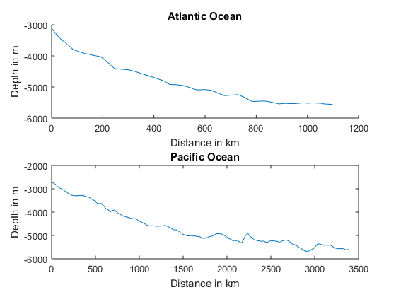

Contents
- Homework 5
- Part 1: Conductive heat flow
- 1.1: A model
- 1.2: Heat flow
- 1.3: Thermal conductivities
- 1.4: The heat transport equation
- 1.5: The conservation equation
- Part 2: Oceanic lithosphere cooling
- 2.1: Set up the model domain and compute
- 2.2: Analyze model output
- Part 3: Plate Velocity and the depth of oceans
- 3.1 Load and plot sea-floor depth data
- 3.2 A half-space model
- Part 4: Global Oceanic plate ages
- 4.1 Load topo data and plot sea-floor depths
- 4.2 Kill the topography and get the units right
- 4.3 Compute sea-floor age
- 4.4 Plot oceanic lithosphere age map
- 4.5 Discuss your results
Homework 5
John Shuler and Simon Roy
GEOS597 Homework #5: Seafloor subsidence due to cooling
Due: 10/17/2016
close all; clear all; clc;
Part 1: Conductive heat flow
1.1: A model
1.2: Heat flow
In this equation, the heat flow down is negative, which means that heat actually flows up, from higher temperature to lower temperture, as we would expect. Negative flow down ==> positive Q up.
1.3: Thermal conductivities
- Thermal Conductivity (Watts/m*C):
- Silver: 406
- Magnesium: 156
- Glass: 0.8
- Rock: 2-7
- Wood: 0.04-0.12
from Young, Hugh D., University Physics, 7th Ed. Table 15-5 from engineeringtoolbox.com
1.4: The heat transport equation
The heat transport equation will become:
The derivative term on the right hand side =

So the heat equation becomes:
or
1.5: The conservation equation
Compute derivative of Q:
Heat generation A = 0 gives us:
We can condense all the constants into a new value , which will be equal to:
Part 2: Oceanic lithosphere cooling
2.1: Set up the model domain and compute
z = 0:0.1:100; % depth [km] dz = z(2)-z(1); % depth step size [km] t = 0:1E5:1E8; % time [yr] dt = t(2)-t(1); % time step [yr] kappa = (1E-6); % thermal diffusivity [m^2/s] To = 640; % initial temp. at ridge [deg. C] tic; T = zeros(length(z),length(t)); for j = 1:length(t); for i = 1:length(z); T(i,j) = To * erf (z(i)./(2*sqrt(kappa*t(j)))); end end runTime = toc;
EXTRA CREDIT: runTime >>> runTime2. Using the piecewise matrix multiplication of two matrices rather than using two for loops is much less computationally expensive.
h = figure; imagesc(t, z, T); c = colorbar; c.Label.String = 'Temperature \circC'; xlabel ('t [years]') ylabel ('Depth [km]') title('Plate cooling as modeled using 2 "for" loops') tic [TIME, DEPTH] = meshgrid (t,z); T2 = To * erf (DEPTH./(2*sqrt(kappa*TIME))); runTime2 = toc; h = figure; imagesc(t, z, T2); c = colorbar; c.Label.String = 'Temperature \circC'; xlabel ('t [years]') ylabel ('Depth [km]') title('Plate cooling as modeled using meshgrid and multiplication')
2.2: Analyze model output
- This model makes sense given our boundary conditions. Newly formed parts of the plate are near the boundary condition value of 640C = To, while as time goes on (and depth increases) more of the plate is cooled by the ocean water due to conduction, and consequently more of the plate cools toward the ocean temperature(which we assumed, incorrectly, to be zero). The result is the temperature gradient we see in our figure.
- Many factors control the rate of temperature decay:
- Ocean Temperature
- Specific heat of the water and plate
- Density of the plate
- Ocean currents/convection
- The relative thermal conductivity(s)
- We could relate this model with distance from the ridge axis if we know the plate velocity. We could multiply the age by the plate velocity, and we we would get back the distance from the ridge.
- A more appropriate boundary condition for T(z=0) would be 4 degrees C, because we know that the temperature at a "deep enough" point in the ocean is a constant 4 degrees, which has to do with the thermal expansion of water.
- 640C seems like an appropriate temperature for a mid ocean ridge, since, essentially, magma is being cooled into solid rock at the ridge. Liquid magma (according to Wikipedia) ranges from approximately 700-1300C, taking a value at the lower end of this scale seems appropriate, since the magma will be on the verge of solidifying as the plate forms.
Part 3: Plate Velocity and the depth of oceans
3.1 Load and plot sea-floor depth data
First we load our data:
load('spreadingData.mat');
Now we want a plot depth(z) vs distance from the ridge(x)
h=figure; subplot(2,1,1); hold on plot(Bath.atlanticx,Bath.atlanticz); title('Atlantic Ocean'); xlabel('Distance in km'); ylabel('Depth in m'); subplot(2,1,2); plot(Bath.pacificx,Bath.pacificz); title('Pacific Ocean'); xlabel('Distance in km'); ylabel('Depth in m');
3.2 A half-space model
For this step we will attempt to find a value for plate velocity that closely matches the depth data that we have.
velocity = 45; % in [Km/Ma] dpacific = zeros(1,numel(Bath.pacificx)); for ii = 1:numel(Bath.pacificx); dpacific(ii) = -(2.65 + 0.345*(Bath.pacificx(ii)/velocity)^(1/2)); end dpacific = dpacific*1E03;
Now for the Atlantic side
velocity = 14; % in [Km/Ma] datlantic = zeros(1,numel(Bath.atlanticx)); for ii = 1:numel(Bath.atlanticx); datlantic(ii) = -(2.65 + 0.345*(Bath.atlanticx(ii)/velocity)^(1/2)); end datlantic = datlantic*1E03;
Now we re-plot the previous data with the depths predicted by our simplified model
h=figure; subplot(2,1,1); hold on plot(Bath.atlanticx,Bath.atlanticz); plot(Bath.atlanticx,datlantic); legend toggle; legend('Empirical','Model'); title('Atlantic Ocean'); xlabel('Distance in km'); ylabel('Depth in m'); subplot(2,1,2); hold on plot(Bath.pacificx,Bath.pacificz); plot(Bath.pacificx,dpacific); legend toggle; legend('Empirical','Model'); title('Pacific Ocean'); xlabel('Distance in km'); ylabel('Depth in m');
The value 2.65 represents the depth at t=0, or the depth at the mid-ocean ridge in this model.
The best velocities we found to fit the data, which is somewhat a matter of opinion since we didn't do any calculations to show it, are as follows:
- Pacific: 45 km/Ma
- Atlantic: 14 km/Ma
This works out to 4.5 cm/yr for the Pacific and 1.4 cm/yr for the Atlantic
Published value for the Atlantic spreading: ~2.5cm/yr Pacific: ~10cm/yr
These values do not match our predictions exactly, but they are fairly reasonable considering our very simplified model.
Part 4: Global Oceanic plate ages
4.1 Load topo data and plot sea-floor depths
load ('topo.mat'); h=figure; h.InvertHardcopy='off'; % Ensure that the colors of the saved figure match the colors on the display h.Color='k'; % changes background color h.Position=[100 100 1000 500]; % sets image position and size(coords of lower left and upper right) h.PaperPositionMode='auto'; % saves image position for print and figure projection %%setup map axes ax=axesm('Mollweid','Frame','on','Grid','on'); % sets projection type and turns frame and gridding on setm(ax,'MLabelLocation',60); % sets position for labels of the longitude lines every 60 degrees setm(ax,'PLabelLocation',30); % sets position for labels for latitude lines every 30 degrees mlabel('MLabelParallel',0); %labels longitude lines along the equator plabel('PLabelMeridian',-25); % labels latitude lines along the chosen meridian axis('off'); % turns normal square axis off setm(ax,'FontColor',[0.9 0.9 0.9]); % sets color of labels to work on black background setm(ax,'GColor',[0.9 0.9 0.9]); % sets color of grid to work with black background c=colorbar('color', [0.9 0.9 0.9]); % adds colorbar and sets font color c.Label.String= 'Elevation (m)'; % adds label to colorbar % These commands add coastlines and plot elevation load('coastlines'); % loads built-in MATLAB data called coastlines plotm(coastlat, coastlon); LAT = topolatlim(1):topolatlim(2); LON = topolonlim(1):topolonlim(2); [lon, lat] = meshgrid(LON,LAT); % compute the lat/lon of every grid point in topo pcolorm(lat,lon,topo); % plot the matrix of elevations on the map demcmap(topo); % give it a better colormap % load the plate boundary data and plot the plate boundaries [platelat, platelon] = importPlates('All_boundaries.txt'); plotm(platelat,platelon,'k');
4.2 Kill the topography and get the units right
Set elevation above sea level to zero
for j = 1:numel(topo); if topo(j) >= 0; topo(j) = 0; end end
Now I'll switch the values to be positive, and change the units to km
depth = -topo./1000;
Now I'll plot this new depth matrix using the same figure commands as before:
h=figure; h.InvertHardcopy='off'; % Ensure that the colors of the saved figure match the colors on the display h.Color='k'; % changes background color h.Position=[100 100 1000 500]; % sets image position and size(coords of lower left and upper right) h.PaperPositionMode='auto'; % saves image position for print and figure projection %%setup map axes ax=axesm('Mollweid','Frame','on','Grid','on'); % sets projection type and turns frame and gridding on setm(ax,'MLabelLocation',60); % sets position for labels of the longitude lines every 60 degrees setm(ax,'PLabelLocation',30); % sets position for labels for latitude lines every 30 degrees mlabel('MLabelParallel',0); %labels longitude lines along the equator plabel('PLabelMeridian',-25); % labels latitude lines along the chosen meridian axis('off'); % turns normal square axis off setm(ax,'FontColor',[1 1 1]); % sets color of labels to work on black background setm(ax,'GColor',[0.9 0.9 0.9]); % sets color of grid to work with black background c=colorbar('color', [0.9 0.9 0.9]); % adds colorbar and sets font color c.Label.String= 'Ocean Depth (km)'; % adds label to colorbar % These commands add coastlines and plot elevation load('coastlines'); % loads built-in MATLAB data called coastlines plotm(coastlat, coastlon); LAT = topolatlim(1):topolatlim(2); LON = topolonlim(1):topolonlim(2); [lon, lat] = meshgrid(LON,LAT); % compute the lat/lon of every grid point in topo pcolorm(lat,lon,depth); % plot the matrix of elevations on the map demcmap(depth); % give it a better colormap % load the plate boundary data and plot the plate boundaries [platelat, platelon] = importPlates('All_boundaries.txt'); plotm(platelat,platelon,'k'); % Use colormap suggested in assignment: colormap( flipud( jet(20) ) ); % This command sets the color properties of the figure to a matrix % of values, the flipud command flips the matrix upside-down, and jet(20) is the matrix of % RGB values for the colors in the colormap, and 20 is the number of % colors included.

4.3 Compute sea-floor age
Rearranging equation (3) for t gives:
4.4 Plot oceanic lithosphere age map
First we need a matrix with the ages in Ma as the entries, we will accomplish this using the above equation, then I'll set the values at the continent to -10 Ma as suggested.
ageArray = zeros(180,360); for ii = 1:numel(depth); ageArray(ii) = ((depth(ii)-2.65)/(0.345))^2; if ageArray(ii) == ((0-2.65)/0.345)^2; ageArray(ii) = -10; end end
Now we want to plot the resulting figure.
h=figure; h.InvertHardcopy='off'; % Ensure that the colors of the saved figure match the colors on the display h.Color='k'; % changes background color h.Position=[100 100 1000 500]; % sets image position and size(coords of lower left and upper right) h.PaperPositionMode='auto'; % saves image position for print and figure projection %%setup map axes ax=axesm('Mollweid','Frame','on','Grid','on'); % sets projection type and turns frame and gridding on setm(ax,'MLabelLocation',60); % sets position for labels of the longitude lines every 60 degrees setm(ax,'PLabelLocation',30); % sets position for labels for latitude lines every 30 degrees mlabel('MLabelParallel',0); %labels longitude lines along the equator plabel('PLabelMeridian',-25); % labels latitude lines along the chosen meridian axis('off'); % turns normal square axis off setm(ax,'FontColor',[1 1 1]); % sets color of labels to work on black background setm(ax,'GColor',[0.9 0.9 0.9]); % sets color of grid to work with black background c=colorbar('color', [0.9 0.9 0.9]); % adds colorbar and sets font color c.Label.String= 'Ocean Depth (km)'; % adds label to colorbar % These commands add coastlines and plot elevation load('coastlines'); % loads built-in MATLAB data called coastlines plotm(coastlat, coastlon); LAT = topolatlim(1):topolatlim(2); LON = topolonlim(1):topolonlim(2); [lon, lat] = meshgrid(LON,LAT); % compute the lat/lon of every grid point in topo pcolorm(lat,lon,ageArray); % plot the matrix of elevations on the map demcmap(ageArray); % give it a better colormap % load the plate boundary data and plot the plate boundaries [platelat, platelon] = importPlates('All_boundaries.txt'); plotm(platelat,platelon,'k'); % Then we want the colormap information from the assignment: cmap = flipud( jet(20) ); % This creates a 20x3 matrix of RGB values called cmap, % that is inverted to go from red to blue instead of blue to red. cmap = [0.5 0.5 0.5; cmap]; % this adds gray as the first row of the colormap cmap(end,:) = []; % removes the last row of cmap so it has 20 rows again colormap(cmap); % Sets the colormap properties to use the matrix we created